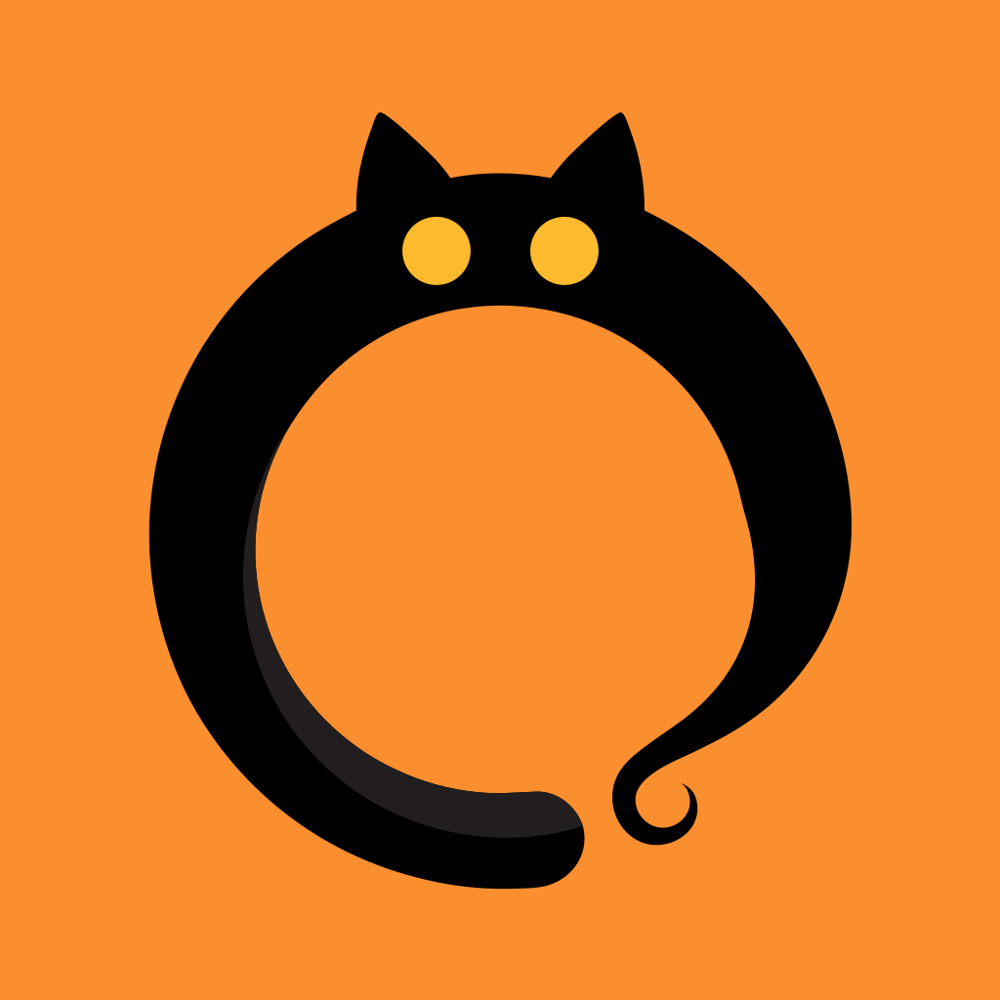

Purrgets Support
Countdown widgets for iPhone and Mac
Need help, found a bug, or have an idea? Write to supp.bld.tech@gmail.com. We usually reply within a few days.
Add a widget on iPhone
- Create a tracker in the Purrgets app.
- Touch and hold an empty spot on the Home Screen until the apps jiggle.
- Tap Edit, then Add Widget, and pick Purrgets.
- Choose a size, tap Add Widget, then tap the widget to choose which tracker it shows.
For the Lock Screen: touch and hold the Lock Screen, tap Customize, choose Lock Screen, then tap the widget area and add Purrgets.
Add a widget on Mac
- Create a tracker in the Purrgets app.
- Right-click the desktop and choose Edit Widgets.
- Find Purrgets and drag a widget to the desktop.
The menu bar cat appears while the Purrgets app is running.
Common questions
My widget doesn't update. Widgets refresh on their own around midnight and when you edit a tracker. If one looks stuck, open the app once, or remove the widget and add it again.
The widget shows the wrong tracker. Touch and hold the widget, choose Edit Widget, and pick another tracker.
Calendar import shows no events. Allow calendar access in Settings › Privacy & Security › Calendars › Purrgets.
Do my trackers sync between iPhone and Mac? Not yet. Each device keeps its own trackers.
Privacy
Purrgets collects no data. Read the privacy policy.